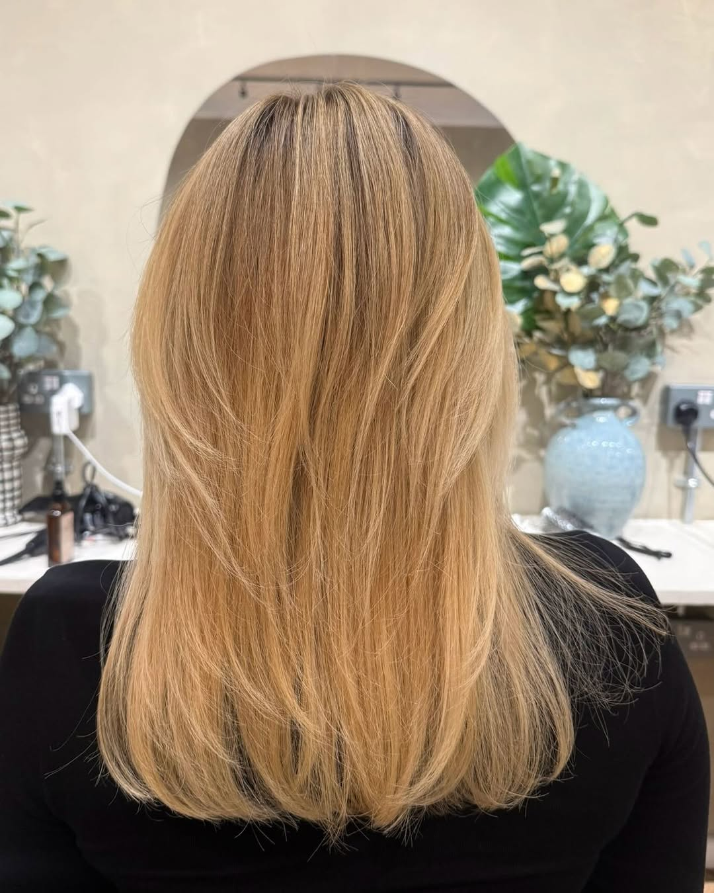
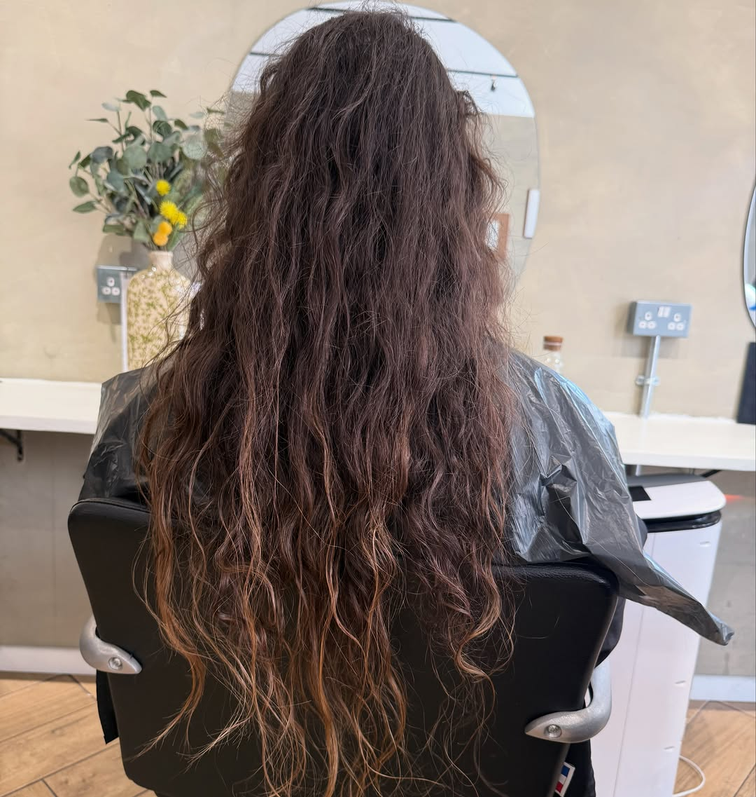
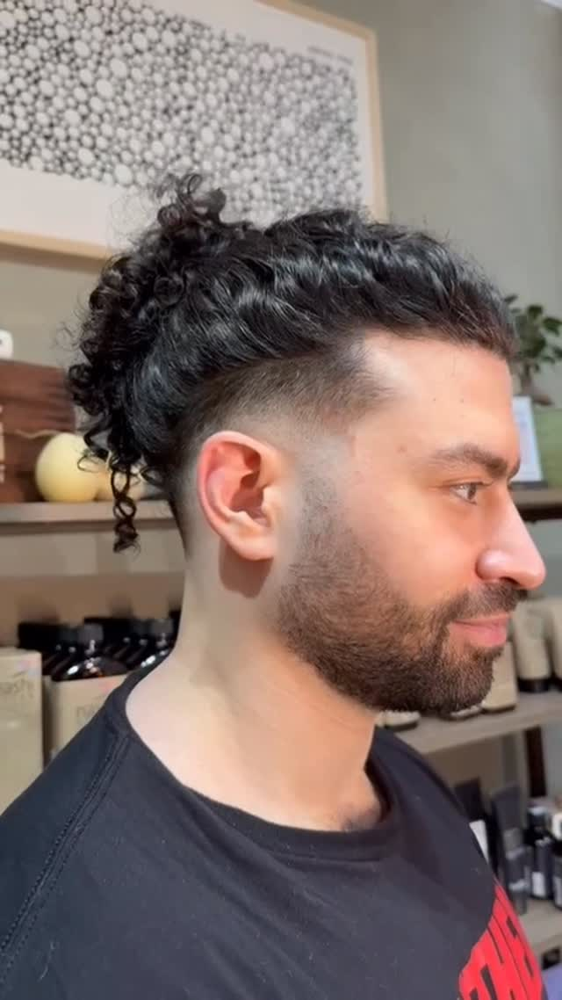
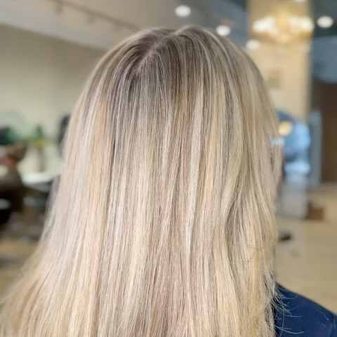

Looks
Recent transformations
Hair pictures from the Simple version of the September site, from @yuzuhairandbeauty.

Soft blonde 
Copper balayage 
Long and straight 
Dimensional blonde 
Before 
Textured crop 
Blonde, from behind